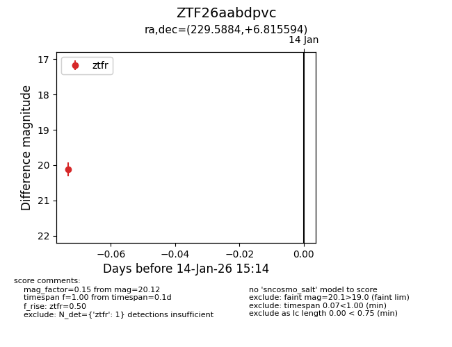
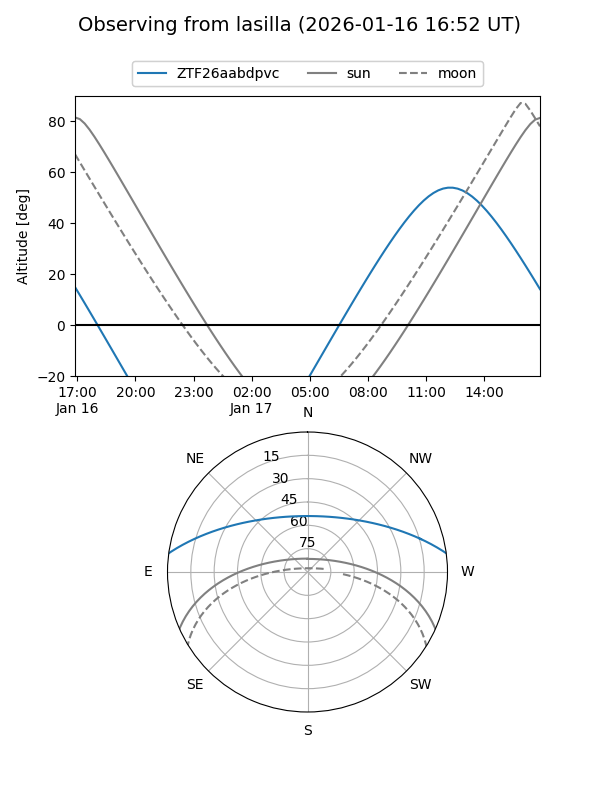
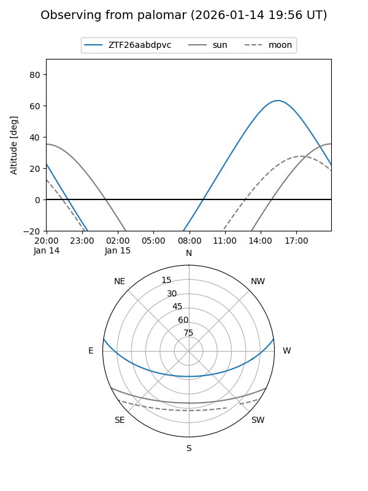

ZTF26aabdpvc
Target ZTF26aabdpvc at 2026-01-14 15:15
Aliases and brokers:
FINK: link
Lasair: link
ALeRCE: link
alt names
ZTF26aabdpvc (ztf,fink_ztf)
Coordinates:
equatorial (ra, dec) = 229.5884,+6.81559
equatorial (HMS+DMS) = 15:18:21.23,+06:48:56.14
galactic (l, b) = (9.5079,+49.67398)
Flags:
Photometry:
last ztfr=20.12
1 ztfr detections
Lightcurve

Visibility


Additional plots